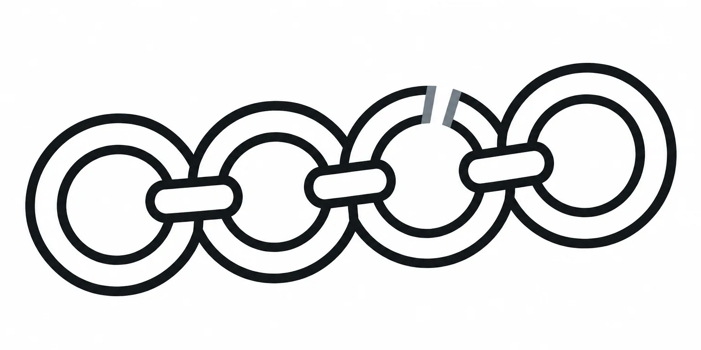

Disadvantages (DA)
A disadvantage, or DA, is the negative's way of saying "the plan causes something bad." To work, it must show four things. First, the bad thing is not happening now. Second, the plan starts it. Third, there is a clear path from the plan to the harm. Fourth, the harm is bad enough to matter. If the bad result of the plan is bigger than the good the plan does, the judge should vote negative.

On this page
The four parts
A DA is a chain. Each link must hold, or the chain breaks.
| Part | Short name | The question it answers | Example (generic) |
|---|---|---|---|
| Uniqueness | U | Is the bad thing not happening now? | "The budget is balanced right now." |
| Link | L | Does the plan start the chain? | "The plan costs a lot of money." |
| Internal link | IL | How does the link lead to the impact? | "New costs force cuts to other programs." |
| Impact | I | Why is the result bad? | "Those cuts hurt students who rely on them." |
Uniqueness
Uniqueness says the world is fine now, on this issue. It matters because a DA must show the plan makes a difference. If the bad thing will happen anyway, the plan does not cause it. That is called non-unique.
Uniqueness and the link work like a scale. If uniqueness is very strong ("the budget is very safe"), the neg needs a big link to tip it. If uniqueness is shaky ("the budget is right on the edge"), even a small link might tip it.
Link
The link connects the plan to the problem. A good link is specific: it is about the plan or the kind of action the plan takes, not about the topic in general.
The aff gets to imagine the plan passes. That is called fiat. So "it would never pass" is not a DA. Most DA links come from what the plan does once it is in place. A few, like the politics DA (the fight to pass the plan costs a leader support), link to the act of passing it. Teams can debate whether that fits fiat. See Fiat.
A link turn (L/T) is an aff answer that says the plan does the opposite: "The plan does not cost money; it saves money." If the link turn is right, the DA becomes a reason to vote aff.
Internal link
The internal link fills the gap between "the plan does X" and "Y bad thing happens." Many DAs have more than one internal link step. Each step is a place the chain can break. New debaters often skip this part. Judges notice. See Internal links.
Impact
The impact is the harm at the end. It can be large and unlikely (a war), or smaller and very likely (people lose a service). The judge compares it to the aff's advantages, the good things the aff says the plan does. How big, how likely, and how soon each one is all matter. See Impacts and Impact calculus.
An impact turn is an aff answer that says the "bad" result is actually good. For example: "Cuts to that program would be good, because the program wastes money." Impact turns are risky. They work only if the aff wins that the result is truly good.
How to answer a DA
The aff has many choices, usually in the 2AC (the second aff speech, the first one after the neg reads its DAs). You can answer each part.
Defense (makes the DA smaller or stops it):
- Non-unique: the bad thing is already happening, or will happen anyway.
- No link: the plan does not do what the DA says.
- No internal link: the step from link to impact does not follow.
- No impact / impact defense: the harm is not as bad as they say, or will not happen.
Offense (turns the DA into a reason to vote aff):
- Link turn: the plan does the opposite, and prevents the bad thing.
- Impact turn: the "bad" thing is actually good.
Weighing (comparing the DA to the case, the aff's plan and its advantages):
- Case outweighs: even if the DA is true, the aff's advantages are bigger, more likely, or come sooner.
- Case turns the DA or the DA does not turn case: arguments about which harm makes the other worse. See Turns case.
Do not link turn and impact turn the same DA. If you say "the plan prevents X" and "X is good," you have argued that the plan prevents a good thing. That is a new disadvantage, made by you, against your own plan. This is called a double turn. The neg will point it out.
How a judge weighs a DA
At the end of the round, the judge asks:
- Is there a risk the DA happens? The neg does not need 100%. A DA with a small risk can still matter if the impact is big.
- How big is that risk compared to the aff's advantage? Compare the size, the chance, and the timing of each.
- Is there a counterplan? A counterplan is a different plan the neg offers instead. If it gets the aff's advantage without the DA, then even a small risk of the DA can be enough. The DA is the net benefit to the counterplan: the reason to pick it over the plan. See Counterplans.
Some judges think a DA can have "zero risk" if the aff wins strong defense. Others think almost every DA has some risk. Teams should argue this, and judges should decide from what is argued.
For the DA shapes that come back every season, see Common DA shapes.
Example in flow shorthand
A generic spending DA: the plan's cost forces cuts elsewhere. The neg reads it in the 1NC. Each part shows the four speeches that argue it, top to bottom.
Key: N/U = non-unique. L/T = link turn. Ext = extend (carry forward). ev = evidence. $ = money. -> = leads to. Names in parentheses are invented authors of cards (quoted evidence).
DA: SPENDING
UNIQUENESS
1NC: Budget balanced now
(Analyst 21)
2AC: 1. N/U: deficit growing
already (Author 22)
2NR: Ext U: their ev predates
new budget deal
2AR: Deficit still growing;
ev is fine
LINK
1NC: Plan costs $50B (Expert 20)
2AC: 2. L/T: plan saves $
over time
2NR: Savings take 5 yrs;
cuts happen now
2AR: Savings > cost by yr 3
INTERNAL LINK
1NC: New cost -> offset cuts
2AC: 3. No IL: Congress
can borrow
2NR: Law requires offsets
2AR: (no answer)
IMPACT
1NC: Cuts hit school programs
2AC: 4. Case outweighs:
more people helped
2NR: DA turns case: same
kids lose both
2AR: Case is bigger and soonerHow to read it: the 2AR dropped "law requires offsets," which helps the neg. But if the link turn (savings by year 3) is true, there is no cost to force cuts, so the dropped step matters little. The round comes down to timing: do the cuts happen now, before the savings arrive? The judge decides who explained that better.
Common mistakes
- Neg: a link to the topic, not to the plan. Fix: find a link to what this plan does. A generic link is easy to answer with "no link."
- Neg: skipping the internal link. Fix: say each step out loud. "Plan costs money, so the law forces cuts, so programs lose funding."
- Aff: double-turning. Fix: pick link turns or impact turns on one DA, not both.
- Aff: only defense, no weighing. Fix: even if you think the DA is weak, say why the case outweighs a small risk of it.
- Both: forgetting uniqueness controls the direction. Fix: if the bad thing is already happening, the link no longer matters. Then a link turn (the plan prevents the bad thing) becomes a reason to vote aff.
- Judges: requiring 100% proof. Fix: weigh the risk. A small chance of a large harm can still beat a small sure benefit, if the teams argue it that way.
Related pages
- Uniqueness: why "it will not happen anyway" is the DA's foundation.
- Links and link turns: what makes a link specific.
- Answering a disadvantage: a full 2AC block, step by step.
- Internal links: the steps between the link and the harm.
- Impacts: what makes a harm count, and impact turns.
- Impact calculus: how to compare a DA to the case, including "turns case".